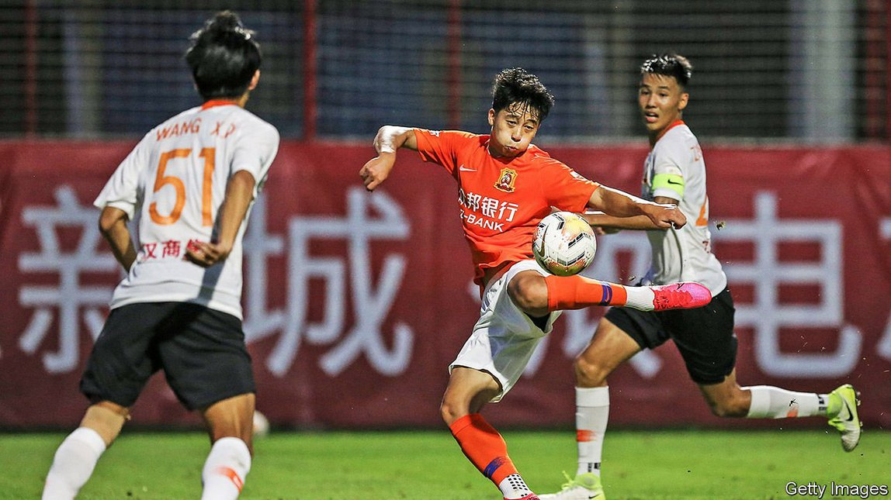

2021-05-31T07:28:56+00:00
Own goal
自摆乌龙
自擺烏龍
China’s football troubles reflect broader issues within the economy
中国足球的烦恼是更广泛经济问题的写照
中國足球的煩惱是更廣泛經濟問題的寫照
Slow growth and politics take their toll
增长放缓与政治干预的影响显现
增長放緩與政治干預的影響顯現
IT WAS A hot and sticky night for football. Because of covid-19 restrictions, the match was played at a neutral site, nearly three hours from Shanghai by car. Adding to the inconvenience, kick-off was at 6pm on a Monday. Yet a few thousand supporters still made the trek on May 10th to watch their beloved local side, Shenhua, battle the club from Hebei, a northern province. “It’s a kind of faith for us,” said A.G. Wan, a middle-aged businessman.
对足球比赛来说，那是一个闷热潮湿的夜晚。由于新冠肺炎的防疫要求，比赛在距离上海近三小时车程的一个第三方场地举行。更添不便的是，开球时间是周一下午6点。不过，仍有数千名球迷长途跋涉前去观看5月10日的这场比赛——他们热爱的本地俱乐部申花对阵河北俱乐部。“这对我们来说差不多是一种信仰。”中年商人A.G.万说。
對足球比賽來說，那是一個悶熱潮濕的夜晚。由於新冠肺炎的防疫要求，比賽在距離上海近三小時車程的一個第三方場地舉行。更添不便的是，開球時間是周一下午6點。不過，仍有數千名球迷長途跋涉前去觀看5月10日的這場比賽——他們熱愛的本地俱樂部申花對陣河北俱樂部。“這對我們來說差不多是一種信仰。”中年商人A.G.萬說。
Cries of sha bi, a phrase not translatable in a family newspaper, rang out whenever the referee missed fouls that, for the fans, were plain to see. Cheers erupted when a Shenhua midfielder scored the equaliser with a perfectly struck last-minute penalty kick. The crowd’s passion would have been familiar to football fans anywhere. But the canvas on which it was painted—a league beset by financial chicanery and political meddling—was unmistakably Chinese.
每当场上出现球迷认为显而易见的犯规而裁判没有判罚时，球迷们就会狂呼“傻逼”。比赛最后一分钟，申花的一名中场球员以一记完美的点球将比分扳平，现场一片欢腾。世界上任何地方的球迷对于这样的群情激昂都不会陌生。但它所处的背景环境——一个受困于财务伎俩和政治干预的联赛——却明明白白是中国特色的。
每當場上出現球迷認為顯而易見的犯規而裁判沒有判罰時，球迷們就會狂呼“傻逼”。比賽最後一分鐘，申花的一名中場球員以一記完美的點球將比分扳平，現場一片歡騰。世界上任何地方的球迷對於這樣的群情激昂都不會陌生。但它所處的背景環境——一個受困於財務伎倆和政治干預的聯賽——卻明明白白是中國特色的。
China can seem like an economic juggernaut. Leaders set lofty targets and funnel money to favoured industries, a potent recipe when combined with talented, driven people. Football shows a less flattering side of its system: how the top-down approach that has worked well to build bullet trains can fail in less predictable domains.
中国看起来可能像一台势不可挡的巨型经济机器。领导者设定宏伟的目标，将资金输送到要重点发展的行业，再加上奋发努力的人才，就形成了一种强有效的运作模式。足球暴露了这套系统叫人不那么感觉良好的一面：这种自上而下的方法可以成功地建造高速列车，在那些更难预测的领域却可能遭遇失败。
中國看起來可能像一台勢不可擋的巨型經濟機器。領導者設定宏偉的目標，將資金輸送到要重點發展的行業，再加上奮發努力的人才，就形成了一種強有效的運作模式。足球暴露了這套系統叫人不那麼感覺良好的一面：這種自上而下的方法可以成功地建造高速列車，在那些更難預測的領域卻可能遭遇失敗。
The government has high ambitions for football, encapsulated by President Xi Jinping’s stated dream for China to win the World Cup some day. That day remains distant. The national team is ranked 77th in the world, behind tiny Curaçao. And domestic leagues, a crucial building block, are mired in mediocrity.
政府对足球有很高的期许：国家主席习近平曾说，希望国足有朝一日能夺得世界杯。距离那一天仍然遥远。中国国家队的世界排名是第77位，排在弹丸之地库拉索岛（Curaçao）之后。而为国家队输送人才的重要的国内联赛也始终没有起色。
政府對足球有很高的期許：國家主席習近平曾說，希望國足有朝一日能奪得世界盃。距離那一天仍然遙遠。中國國家隊的世界排名是第77位，排在彈丸之地庫拉索島（Curaçao）之後。而為國家隊輸送人才的重要的國內聯賽也始終沒有起色。
To understand what has gone wrong, look at the Chinese Super League (CSL), the country’s main football contest. Three months after winning its first-ever CSL title, Jiangsu Suning disbanded in February, tripped up by slowing growth and a more conservative political environment. The team’s owner, Suning, an electronics retailer, has been trying to pay down its debts, like other overstretched Chinese firms. Not long ago a football champion would have attracted buyers, even if bleeding cash. These days, though, few tycoons dare to acquire trophy assets. In all, more than 20 teams have left China’s professional leagues in the past two years.
想知道是哪里出了问题，看看中国最主要的足球赛事中超联赛。江苏苏宁队在第一次夺得中超冠军的三个月后，受增长放缓和政治环境趋于保守的影响，于今年2月宣布解散。球队的东家苏宁是一家电子产品零售商，与其他过度扩张的中国公司一样，一直在努力偿还债务。前几年，一支冠军球队哪怕严重亏损也能吸引来买家。但如今很少有大亨敢去收购炫耀性资产。过去两年里已有20多支球队退出了中国各级职业联赛。
想知道是哪裡出了問題，看看中國最主要的足球賽事中超聯賽。江蘇蘇寧隊在第一次奪得中超冠軍的三個月後，受增長放緩和政治環境趨於保守的影響，於今年2月宣布解散。球隊的東家蘇寧是一家電子產品零售商，與其他過度擴張的中國公司一樣，一直在努力償還債務。前幾年，一支冠軍球隊哪怕嚴重虧損也能吸引來買家。但如今很少有大亨敢去收購炫耀性資產。過去兩年里已有20多支球隊退出了中國各級職業聯賽。
The economics of football in China are atrocious. Average annual salaries for players of $1.2m in 2019 put the CSL roughly in line with Ligue 1, France’s top division. But revenues in China are piddling, with tickets regularly costing as little as 50 yuan ($8). Guangzhou Evergrande, a club renowned for its profligacy, took in only a third of the 2.9bn yuan ($450m) that it spent in 2019.
中国足球的经济状况惨不忍睹。2019年，中超球员的平均年薪为120万美元，与法国顶级的甲级联赛大致相当。但中国球队的收入却微不足道，票价通常只有50元。以出手阔绰闻名的广州恒大在2019年支出29亿元，而收入只有支出的三分之一。
中國足球的經濟狀況慘不忍睹。2019年，中超球員的平均年薪為120萬美元，與法國頂級的甲級聯賽大致相當。但中國球隊的收入卻微不足道，票價通常只有50元。以出手闊綽聞名的廣州恆大在2019年支出29億元，而收入只有支出的三分之一。
Moreover, most wages go to a few extremely expensive players, often imported from abroad, sometimes well past their prime. Carlos Tevez, a faded Argentinian star, described his spell with Shenhua in 2017 as a “vacation for seven months”, despite reportedly earning $40m. In the 1990s foreign clubs rarely gave their Chinese counterparts the time of day, says Joseph Lee, a powerful agent. Now, he says, they view China as “stupid” money.
此外，大部分工资都付给了少数天价球员，这些球员往往从国外引进，有些早已过了巅峰期。过气的阿根廷球星卡洛斯·特维斯（Carlos Tevez）在2017年加盟申花，他把自己这段经历形容为“休假七个月”，尽管据报道赚了4000万美元。大名鼎鼎的经纪人李誉鸿表示，在上世纪90年代，外国俱乐部基本上懒得理睬中国俱乐部，现在他们把中国视为“人傻钱多”之地。
此外，大部分工資都付給了少數天價球員，這些球員往往從國外引進，有些早已過了巔峰期。過氣的阿根廷球星卡洛斯·特維斯（Carlos Tevez）在2017年加盟申花，他把自己這段經歷形容為“休假七個月”，儘管據報道賺了4000萬美元。大名鼎鼎的經紀人李譽鴻表示，在上世紀90年代，外國俱樂部基本上懶得理睬中國俱樂部，現在他們把中國視為“人傻錢多”之地。
Why have teams burnt cash with such gusto? Partly it is about branding. Xu Jiayin, the billionaire behind Evergrande, a property developer, once said that owning a football club ensured that his company made the evening news at a fraction of the cost of advertisements. But China’s tycoons are not just targeting consumers. They see Mr Xi’s professed love for football as a way to connect with him. After he rose to power in 2012, Chinese money poured into starry European clubs, from Inter Milan to Manchester City.
为什么球队如此热衷烧钱？一定程度上与品牌推广有关。房地产开发商恒大地产的亿万富翁老板许家印曾表示，拥有一家足球俱乐部可以让公司登上晚间新闻，花费只是广告费的零头。但中国的大亨们盯上的并不仅仅是消费者。他们把足球视为与公开表达热爱足球的习近平建立连结的一种方式。习近平于2012年掌权后，中国资金大举涌入星光熠熠的欧洲俱乐部，包括国际米兰和曼城等。
為什麼球隊如此熱衷燒錢？一定程度上與品牌推廣有關。房地產開發商恆大地產的億萬富翁老闆許家印曾表示，擁有一家足球俱樂部可以讓公司登上晚間新聞，花費只是廣告費的零頭。但中國的大亨們盯上的並不僅僅是消費者。他們把足球視為與公開表達熱愛足球的習近平建立連結的一種方式。習近平於2012年掌權後，中國資金大舉湧入星光熠熠的歐洲俱樂部，包括國際米蘭和曼城等。
The past year has made clear that, far from appreciating their investments in football, Mr Xi and his advisers see them as a red flag. Companies including Fosun, Wanda, CEFC, TEDA and Guangzhou R&F were among the big spenders, and all have had their finances come under scrutiny. There is talk that some entrepreneurs overpaid for players or for clubs in order to skirt China’s stringent capital controls (the suggestion was that they had kickbacks paid into their accounts abroad).
过去一年有一件事情已经很明确：习近平和他的幕僚非但不欣赏这种足球投资，还视之为一种危险信号。大手笔投资的公司包括复星、万达、华信能源、泰达和广州富力，它们全都受到了严格的财务审查。有传言称，一些企业家为球员或俱乐部支付过高的价钱是为了规避中国严格的资本管制（言下之意是他们用自己的海外账户收受了回扣）。
過去一年有一件事情已經很明確：習近平和他的幕僚非但不欣賞這種足球投資，還視之為一種危險信號。大手筆投資的公司包括復星、萬達、華信能源、泰達和廣州富力，它們全都受到了嚴格的財務審查。有傳言稱，一些企業家為球員或俱樂部支付過高的價錢是為了規避中國嚴格的資本管制（言下之意是他們用自己的海外賬戶收受了回扣）。
So the government has introduced tough new rules, a crackdown that parallels Mr Xi’s efforts to reassert control over the broader economy. Politically, there has been a push to induct more footballers into the Communist Party, much as private companies are pressed to set up party branches. And the Chinese Football Association has capped salaries at 5m yuan for Chinese players and €3m for foreigners. It also ordered clubs to drop corporate titles from their names. Guangzhou Evergrande has become Guangzhou.
政府因此推出了严厉的新规，与习近平重申对整体经济的控制的做法一致。在政治上，推动吸收更多球员加入共产党，正如要求私营企业设立党支部一样。此外，中国足协规定中国球员的薪资上限为500万元人民币，外籍球员为300万欧元。另外还要求俱乐部除去公司冠名。广州恒大队已更名为广州队。
政府因此推出了嚴厲的新規，與習近平重申對整體經濟的控制的做法一致。在政治上，推動吸收更多球員加入共產黨，正如要求私營企業設立黨支部一樣。此外，中國足協規定中國球員的薪資上限為500萬元人民幣，外籍球員為300萬歐元。另外還要求俱樂部除去公司冠名。廣州恆大隊已更名為廣州隊。
Ma Dexing, a football columnist, sees the restraints as progress. “Over the past 30 years professional football in China has been chaotic,” he says. Mr Lee thinks the changes have been rash. “It’s like half the building was good and the other half rotten, but they demolished it all,” he says.
足球专栏记者马德兴将这些限制视为进步。他说：“过去30年，中国的职业足球一直很混乱。”李誉鸿则认为这些改变过于草率。“就好像一栋楼一半是好的一半是烂的，但他们把整栋楼拆了。”他说。
足球專欄記者馬德興將這些限制視為進步。他說：“過去30年，中國的職業足球一直很混亂。”李譽鴻則認為這些改變過於草率。“就好像一棟樓一半是好的一半是爛的，但他們把整棟樓拆了。”他說。
The new rules also display officials’ penchant for micro-management. In 2017, to boost youth development, the football association required clubs to field an under-23 player for every match. Managers gamed that rule, substituting youngsters after as little as a minute. So the football tsars mandated that they must play for the whole match. “The narrative every year ends up being ‘How have the rules changed?’,” sighs Cameron Wilson, founder of Wild East Football, a website devoted to the Chinese game.
新规也显现出官员们对微观管理的嗜好。2017年，为促进年轻球员成长，足协要求俱乐部每场比赛都要派出一名23岁以下的球员。教练们钻规则的空子，让年轻球员上场一分钟后就换下来。于是官员们又规定他们必须踢满整场比赛。“每年对足球的讨论到了最后都是‘规则又变什么样了？’”专门介绍中国足球的网站狂野东方足球（Wild East Football）的创始人韦侃仑（Cameron Wilson）叹息道。
新規也顯現出官員們對微觀管理的嗜好。2017年，為促進年輕球員成長，足協要求俱樂部每場比賽都要派出一名23歲以下的球員。教練們鑽規則的空子，讓年輕球員上場一分鐘後就換下來。於是官員們又規定他們必須踢滿整場比賽。“每年對足球的討論到了最後都是‘規則又變什麼樣了？’”專門介紹中國足球的網站狂野東方足球（Wild East Football）的創始人韋侃侖（Cameron Wilson）嘆息道。
For China’s national football team, the fundamental problem is not at the elite level but at the grassroots. In big cities there is little space for children to kick a ball around. A hyper-competitive education system, in any case, leaves them little time for play. Officials had hoped that glittering football academies would help. The world’s largest was opened by Evergrande in 2012 with 50 full-sized pitches. So far, though, none of its thousands of graduates has made the senior national team.
对于中国国家足球队来说，根本问题不在精英层面，而在基层。大城市的孩子没有什么地方踢球。而且无论如何，在一个竞争白热化的教育体系里，他们也没什么时间踢球。官员曾希望那些光鲜亮丽的足球学校会有用。2012年，恒大开设了世界最大的足球学校，里面有50个标准球场。但到目前为止，几千名毕业生当中还无人入选国足。
對於中國國家足球隊來說，根本問題不在精英層面，而在基層。大城市的孩子沒有什麼地方踢球。而且無論如何，在一個競爭白熱化的教育體系里，他們也沒什麼時間踢球。官員曾希望那些光鮮亮麗的足球學校會有用。2012年，恆大開設了世界最大的足球學校，裡面有50個標準球場。但到目前為止，幾千名畢業生當中還無人入選國足。
The football association has also tried to identify promising players early in life, placing them in development programmes—an approach that works for table tennis and diving but does not translate so well to team sports. “You don’t need an under-15 national team. You need thousands of under-15s playing,” says Joan Oliver, former boss of Barcelona, who now owns Beijing Institute of Technology Football Club in China’s second tier.
足协也试图早早发掘有潜力的小球员，让他们参加培养计划——这种方法对乒乓球和跳水奏效，但不太适合团体运动。“中国不需要一支15岁以下的国家队。真正需要的是成千上万15岁以下的孩子踢球。”巴萨前CEO、目前是中甲球队（中甲是仅次于中超的职业足球联赛）北京理工足球俱乐部大股东的琼·奥利弗（Joan Oliver）表示。
足協也試圖早早發掘有潛力的小球員，讓他們參加培養計劃——這種方法對乒乓球和跳水奏效，但不太適合團體運動。“中國不需要一支15歲以下的國家隊。真正需要的是成千上萬15歲以下的孩子踢球。”巴薩前CEO、目前是中甲球隊（中甲是僅次於中超的職業足球聯賽）北京理工足球俱樂部大股東的瓊·奧利弗（Joan Oliver）表示。
With qualifying matches for the 2022 World Cup coming up, the government wants short cuts. Over the past three years China has started naturalising foreign footballers. On May 10th it named five, including three Brazilian-born forwards, to its squad. Mr Xi has called for greater self-reliance in China’s quest for global power. Football is a stark reminder that it still needs foreign imports. ■
随着2022年世界杯预选赛临近，政府打算走捷径。过去三年里中国开始归化外籍球员。5月10日，五名归化球员入选国家队，包括三名巴西出生的前锋。习近平呼吁在中国追求全球影响力的过程中要更多依靠自力更生。而足球是一个扎眼的提醒——它仍需要外国进口。
隨着2022年世界盃預選賽臨近，政府打算走捷徑。過去三年里中國開始歸化外籍球員。5月10日，五名歸化球員入選國家隊，包括三名巴西出生的前鋒。習近平呼籲在中國追求全球影響力的過程中要更多依靠自力更生。而足球是一個扎眼的提醒——它仍需要外國進口。